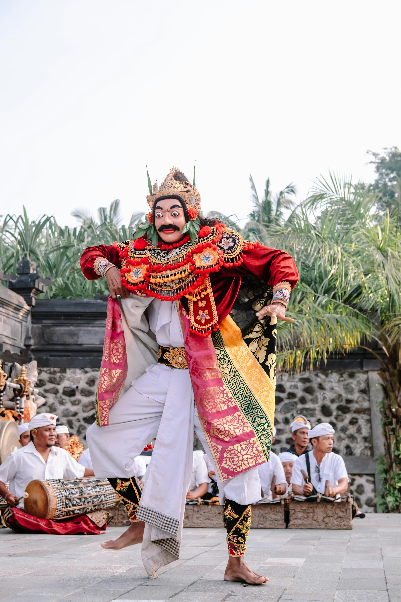

“Tari Jauk: Keunikan Gerak dan Karakter dalam Seni Tari Tradisional Bali”
Tari Jauk, salah satu tarian tradisional Bali yang menggunakan topeng dengan karakter menyeramkan atau berwibawa. Penari mengenakan mahkota, kostum merah, serta hiasan berwarna emas yang mencolok. Tari Jauk menampilkan gerakan tangan, jari, mata, dan tubuh yang ekspresif, diiringi musik gamelan Bali. Tarian ini memperlihatkan keindahan seni tari, keterampilan penari dalam memerankan karakter, serta kekayaan budaya Bali.